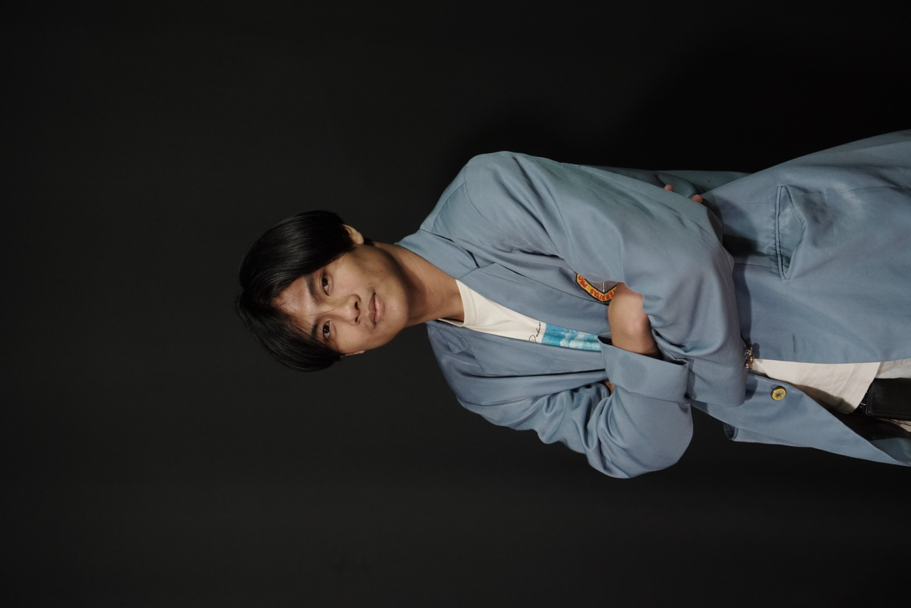
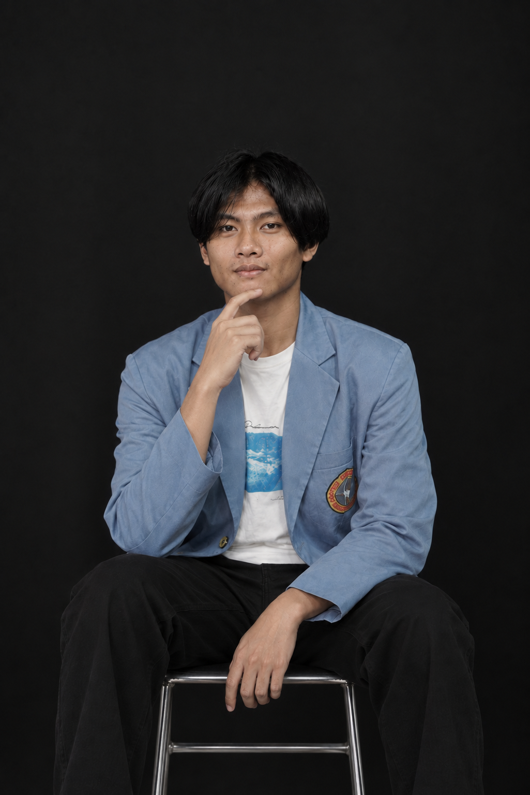

01 / 04 · HOME
Hello,
I'm a Visual
Storyteller.
Bringing together visuals, sound, and ideas to create stories that feel personal and stay with you

Finding perspectives that make stories feel real.
PORTFOLIO / 2024 — 2026
My Works
A selection of projects and experiences that have shaped the way I tell stories through visual media.
A LITTLE ABOUT ME
Muhammad Faqih Annur
I am a Communication Science graduate specializing in Digital Broadcasting, with hands-on experience in audiovisual production throughout my studies. I enjoy being involved in the process behind a production, from developing ideas and writing scripts to operating cameras and turning footage into visual stories. My experience at Garuda TV, tvOne, and various campus productions has taught me how to work effectively in a team and be directly involved in different stages of production. I also enjoy learning new things and continuously developing my skills, particularly in videography, camera operation, and content production.
Have some story to tell? ↗
ANONKFROM IDEA TO THE SCREEN
What I Do?
I stay involved at every stage to keep each story cohesive from start to finish.
Visual
storytelling
Finding a point of view, shaping ideas, and building a story with a clear direction.
↗Camera &
videography
Shaping composition and timing to capture images with meaning.
↗Editing &
post-production
Bringing visuals, pacing, and sound together into a cohesive experience.
↗Creative
production
Supporting research, preparation, filming, and final delivery.
↗03 / 04 · WORK EXPERIENCE
Work
Experience
Every production environment has taught me how collaboration and perspective shape a compelling story.
Download full CVLSP Media Informatika
Administrative Staff
Garuda TV
Production Assistant
tvOne
Creative Production
EDUCATION BACKGROUND
Software Engineering
Communication Science